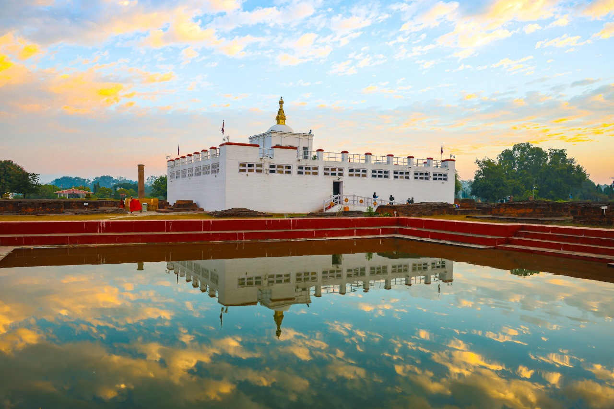

Pashupati nath
Pashupatinath Temple, located in Kathmandu, Nepal, is one of the holiest Hindu temples dedicated to Lord Shiva. It is a UNESCO World Heritage Site and a significant center for spiritual and cultural heritage.

Janakpur
Janakpur, located in Nepal, is the birthplace of Goddess Sita and a significant Hindu pilgrimage site. It is home to the magnificent Janaki Temple, known for its stunning architecture and cultural heritage.

lumbini
Lumbini, located in Nepal, is the birthplace of Lord Buddha and a UNESCO World Heritage Site. It is a sacred pilgrimage destination with ancient monasteries, the Ashoka Pillar, and the Maya Devi Temple.